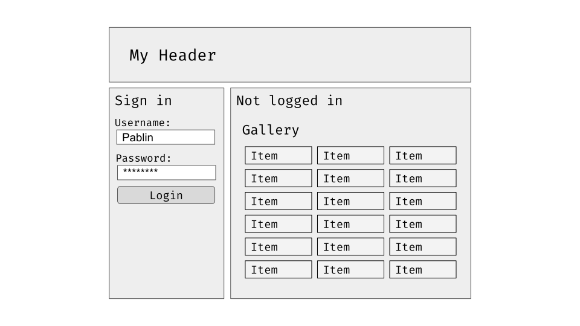
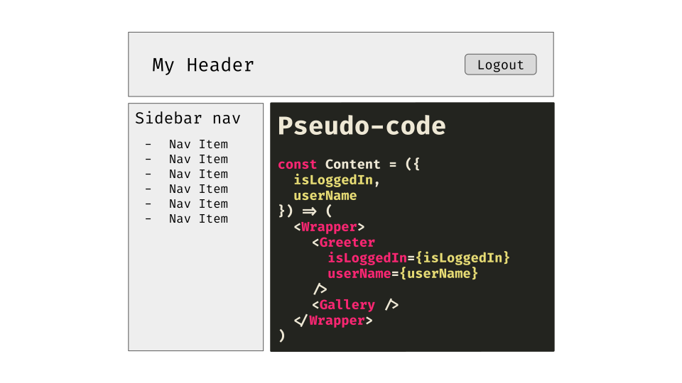

State Management with Redux in 2020
An introduction to Redux Toolkit
Presented by
 Pablin
Pablin
What is a state?
A state represents a snapshot of a system, with the outcome of all the actions taken since the initial load.
What is a state?
Example: a checkboxInitial state
state: unchecked
Component state changes in React
It's not done automatically as in HTML. We need to handle those state changes.import React, { useState } from 'react'
const MyComponent = () => {
const [value, setValue] = useState()
const handleChange = event => setValue(event.target.value)
return (
<input
type="text"
onChange={handleChange}
value={value}
/>
)
}
Fancy custom hooks, maybe
import React, { useState } from 'react'
const useInput = initialValue => {
const [value, setValue] = useState(initialValue)
const onChange = event => setValue(event.target.value)
return {
onChange,
value,
}
}
const MyComponent = () => {
const bindInput = useInput()
return (
<input
type="text"
{...bindInput}
/>
)
}
What if my state depends on another component?
Usual case: radio buttons, toggles, etcReact says: lift the state up!
Cool!
What about complex cases?






But can we fix this
- We can wrap in
React.memo()- Added boilerplate
- Prop drilling is not nice
- We can create a custom
Context
React Contexts
import React, { createContext, useContext, useState } from 'react'
const HiContext = createContext({})
const HiProvider = ({ children }) => {
const [name, setName] = useState('')
const values = { name, setName }
return (
<HiContext.Provider value={values}>
{children}
</HiContext.Provider>
)
}
const Greeter = () => {
const { name } = useContext(HiContext)
return (
Hi, {name}!
)
}
const App = () => {
return (
<HiProvider>
<Greeter />
</HiProvider>
)
}
Context has its caveats, too
- Access through hooks gets us tightly coupled components
- They require a complex testing strategy
- Components not easily reusable in other codebases
- The HOC pattern could probably help here
HOC Pattern
import React, { useContext } from 'react'
import { HiContext } from './hi-context'
const Greeter = ({ name }) => {
return (
Hi, {name}!
)
}
const GreeterContainer = () => {
const { name } = useContext(HiContext)
return <Greeter name={name} />
}
Introducing Redux
- It allows us to separate the state management logic from the components.
- It can be used from Vanilla JS to different UI libraries, including React.
Redux Architecture


Redux Architecture
Ultimately, a Redux store exposes
-
dispatch() -
getState()
How did we write Redux Stores so far?
// constants.js
export const SAY_HI = 'SAY_HI'
// actions.js
import { SAY_HI } from './constants'
export const sayHi = (name) => {
return {
type: SAY_HI,
payload: name,
}
}
// Usage
import { sayHi } from './actions'
store.dispatch(sayHi('Pablin'))
-
NAMED_CONSTANTS_YELLING_AT_US - Action creators
Reducers
import { SAY_HI } from './actions'
const reducer = (state, action) => {
switch (action.type) {
case SAY_HI: {
const name = action.payload
return {
...state,
sayHi: {
...state.sayHi,
name,
},
}
}
default:
return state
}
}
Selectors
They allow us to read info from the storeexport const getUserName = state => state.sayHi.name
// Usage
const userName = getUserName(store.getState())Connecting our store to React
Introducingreact-redux
- Exposes hooks that allow us to read from the Redux Store.
-
Exposes a
connectHOC that feed the states into our components.
React-redux's connect
import { getUserName } from './selectors'
import { sayHi } from './actions'
import Greeter from './greeter'
const mapStateToProps = state => {
name: getUserName(state)
}
const mapDispatchToProps = {
sayHi,
}
export default connect(mapStateToProps, mapDispatchToProps)(Greeter)